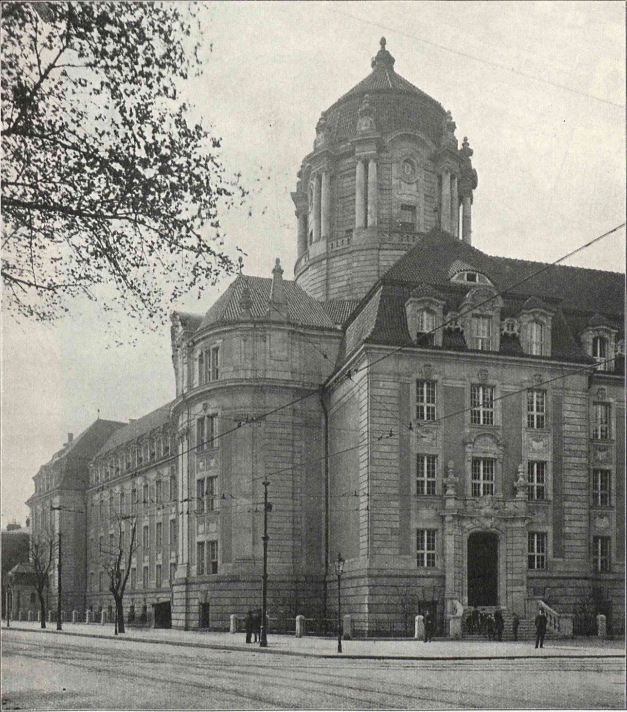

Adolf Winkler
Der Schränker
Einbrecher und Vorsitzender der Berolina. Er überlebt den Angriff und sucht nach einem Auftraggeber. Sein Verdacht folgt den Regeln seiner Unterwelt.
Textgrundlage: PDF-Blätter 16–26, 34–35 [1]Berlin, 1927 • Nach Volker Kutschers Erzählung
Was geschieht hinter
verschlossenen Türen?
Ein Gefangener wird angegriffen. Ein Wärter greift ein.
Und eine Tochter beginnt, ihre eigenen Fragen zu stellen.
Die Tür ist zu. Die Frage bleibt offen.
Eine Gefängnismauer trennt drinnen von draussen. Sie trennt aber nicht sauber zwischen Recht und Unrecht.
Volker Kutschers Moabit (2017), illustriert von Kat Menschik, führt durch drei Teile: «Der Schränker», «Der Wärter» und «Die Tochter». Die Handlung von 1927 verbindet die Ordnung der Unterwelt mit der Ordnung des Gefängnisses – und mit dem Aufbruch einer jungen Frau.
Unsere Lesart: Macht zeigt sich darin, wer handeln darf, wer etwas wissen kann und wessen Geschichte glaubwürdig erscheint. Der Weg führt vom Körper unter staatlicher Kontrolle zur Frage nach dem eigenen Leben.
Hörraum / Lotte Lenya
Musik: Kurt Weill · Text: Bertolt Brecht
Aus Die Dreigroschenoper · Gesang: Lotte Lenya, laut bereitgestellter Datei.
Ein musikalischer Seitenblick auf Verbrechen, Ansehen und die Frage, wem Schuld zugeschrieben wird. Hören Sie auf das Verhältnis zwischen musikalischer Eingängigkeit und bedrohlichem Inhalt.
Lotte Lenya · Mackie Messer · 3:05
Die Moritat stellt Mackie Messer als eine Figur dar, um die sich Erzählungen von Gewalt und Verbrechen sammeln. Für den Vergleich mit Winklers Welt ist interessant, wie öffentliche Erscheinung, Verdacht und Beweis auseinanderfallen können. Das ist eine redaktionelle Lesart, keine Gleichsetzung der Figuren.
Wie beeinflusst die musikalische Form Ihre Wahrnehmung der erzählten Gewalt? Welche Wirkung hat die Stimme? Und wann wird aus dem Verdacht auf Schuld scheinbare Gewissheit?
01 / Der Fall
Literarische RekonstruktionAnton Bruck greift Adolf Winkler im Gefängnis an. Oberaufseher Christian Ritter beendet den Angriff mit seinem Schlagstock. Tage später ist Bruck tot. Was folgt daraus – und was gerade nicht?
Der Schränker
Einbrecher und Vorsitzender der Berolina. Er überlebt den Angriff und sucht nach einem Auftraggeber. Sein Verdacht folgt den Regeln seiner Unterwelt.
Textgrundlage: PDF-Blätter 16–26, 34–35 [1]Der Angreifer
Ersttäter, neu eingeliefert, nach dem Eingreifen bewusstlos. Andere sprechen über seinen Körper und seine Motive. Eine bestätigende Aussage von ihm fehlt.
Textgrundlage: PDF-Blätter 64, 67–68 [1]Der Wärter
Er rettet Winkler. Zugleich fürchtet er, Bruck getötet zu haben. Die Versicherung, er habe nur seine Pflicht getan, beseitigt seine Schuldgefühle nicht.
Textgrundlage: PDF-Blätter 63–75 [1]Interaktive Fallakte / Spoiler
Prüfen Sie eine Hypothese. Die Rückmeldung unterscheidet Textbefund, Verdacht und Beweislücke. Es gibt hier keine Punktzahl für vermeintliche Gewissheit.
Wählen Sie eine Hypothese, um die Belege und ihre Grenzen zu sehen.
Die Frage nach Brucks Tod führt aus der Zelle hinaus: Welche Netzwerke reichen durch die Mauer?
02 / Die Stadt hinter der Mauer
Gefängnis, Gericht, Wohnung, Tanzlokal: Räume entscheiden darüber, wer Zugang erhält und wer draussen bleibt.
Die Untersuchungshaftanstalt Moabit wurde 1877–1881 errichtet und 1881 belegt. Der Erweiterungsbau von 1905 besass direkten Zugang zum Landgericht. Architektur verbindet hier Einschluss und Rechtsprechung. [2]
Im Roman organisiert Winklers Ringverein Berolina Loyalität und Einfluss. Winkler betrachtet Bestochene als berechenbar; Ritter entzieht sich diesem System. Das ist ein literarischer Blick auf Korruption – kein Nachweis, dass sämtliche historischen Ringvereine gleich funktionierten. [1: PDF-Blätter 9–12, 23–26]
Zur historischen Organisation und zum Gegenwartsvergleich finden Sie jetzt das folgende Forschungsdossier. Konkrete Bestechungsfälle und die Genauigkeit der Nachtlokale bleiben gesondert zu prüfen. Berolina wird hier weiterhin nur als Romanbefund verwendet.
Rechercheakte / Vom Roman zur Geschichte
Winklers Berolina ist eine Romanorganisation. Für die historischen Vereine lohnt der Blick auf ihre doppelte Funktion: gegenseitige Unterstützung und Förderung krimineller Geschäfte.
Arthur Hartmann und Klaus von Lampe beschreiben Ringvereine als offiziell organisierte Zusammenschlüsse ehemaliger Strafgefangener. Sie vermittelten ihren Mitgliedern Kontakte, Unterstützung und Status und setzten eigene Regeln durch. In bestimmten Geschäftsfeldern, insbesondere Prostitution und Erpressung, konnten Vereine auch selbst als kriminelle Organisationen handeln. [8: Forschungsabstract]
Für Moabit macht das Winklers Vertrauen in Gegendienst und Loyalität verständlicher. Es bestätigt aber nicht jede Handlung der fiktiven Berolina. Gegenseitige Hilfe innerhalb einer Gruppe kann zugleich die Aufklärung ihrer Taten nach aussen erschweren. Diese Ambivalenz ist unsere Verbindung zwischen Roman und Forschung.
Terra X History / 19. Februar 2023
Videobeitrag von Terra X History. Der Einstieg bei 4:11 führt zum Kapitel «Blüte der Ringvereine». Autor: Arne Peisker; Produktion: ZDF in Zusammenarbeit mit Storyhouse, laut Videobeschreibung. [10]
Blüte der Ringvereine · Einstieg 4:11
Der reale Ort / Aufnahmen vom 29. Juli 2024
Die Luftbilder zeigen die JVA Moabit und das benachbarte Kriminalgericht in ihrem städtischen Umfeld. Sie machen Nähe, Abgrenzung und die Grösse des Komplexes sichtbar. Sie zeigen einen Zustand von 2024 – keine Rekonstruktion der Haftanstalt von 1927 und keinen Einblick in den Haftalltag.
Strassenkarte wird geladen. Karte auf OpenStreetMap öffnen ↗
Bau der Untersuchungshaftanstalt. [2]
Erweiterung mit Zugang zum Landgericht. [2]
Handlungsjahr: Fall und Aufbruch Charlys. [1: PDF-Blatt 102]
Moabit erscheint: ein späterer Blick auf 1927. [1: Impressum]
Bildvergleich / 1908 und 2023
Nebeneinander sehen Sie links eine historische Fotografie der Ecke Rathenower Strasse / Turmstrasse, veröffentlicht 1908. Rechts derselbe Eckbereich des Kriminalgerichts am 28. Juli 2023: Die Kuppel, der vorspringende Eckbau und der kleine Eingang darunter erlauben die Orientierung.
Verändern Sie die Bildanteile mit dem Regler oder zeigen Sie eines der Bilder bildfüllend. Beide Fotografien bleiben unverzerrt sichtbar. Was bleibt an der Architektur erkennbar? Wie verändern Verkehr, Bäume und der gewählte Ausschnitt unseren Blick auf die Institution?

Historisch: Fotograf nicht genannt; Abb. 1 in C. Vohl, «Das neue Kriminalgericht in Berlin-Moabit», Zeitschrift für Bauwesen 58 (1908), Heft VII–IX, Sp. 329–330. Digitalisat: Politechnika Wrocławska / Dolnośląska Biblioteka Cyfrowa. Quelle · Vollständige Quellenseite · Gemeinfrei laut Archivmetadaten. Abbildung aus der Seite ausgeschnitten.
2023: Foto Gerd Eichmann, 28.07.2023. Wikimedia Commons · CC BY 4.0. Für das Web verkleinert und komprimiert; keine inhaltliche Retusche.
Bedienung: Regler ziehen oder Pfeiltasten verwenden. Keine perspektivische Verformung oder KI-Rekonstruktion. Vollständige Bildnachweise [6].
03 / Der gleiche Vorfall. Zwei Wahrnehmungen.
Der erste Teil adressiert Winkler als «du». Ritter erzählt im zweiten Teil als «ich». Die folgende Gegenüberstellung paraphrasiert diese Perspektiven; sie enthält keine erfundenen Figurenreden.
Akte W / Du-Perspektive
Akte R / Ich-Perspektive
Eine korrekte Akte ist noch kein vollständiges Bild.
Der Vergleich legt eine Differenz frei: Ritters Bericht spricht vom Einsatz des Schlagstocks und dem anschliessenden Sturz. Sein innerer Bericht beschreibt ausdrücklich den kräftigen Treffer am Hinterkopf. Die Wortwahl verschiebt das Gewicht zwischen Handlung und Folge. Das macht seine Aussage prüfbedürftig; es beweist weder Mord noch Unschuld. [1: PDF-Blätter 24, 63–64]
04 / Die Tochter — Freiheit ausserhalb der Zelle
Charly Ritter will studieren, arbeiten, tanzen. Ihre Freiheit hängt an Geld, Bildung und an der Frage, was sie zu Hause erzählen darf.
Der neue Name markiert eine Möglichkeit, sich anders zu sehen. Er löst die materiellen Grenzen nicht auf: Greta bezahlt, wo Charly selbst nicht zahlen kann. Auch die Freiheit der Nacht hat eine soziale Voraussetzung. [1: PDF-Blätter 99–106]
Abitur und Studienwunsch stehen neben sozialer Ausgrenzung am Lyzeum. Charly sucht Arbeit und lernt Stenografie und Maschinenschreiben. Die Aussicht auf eine Teilzeitstelle in der Mordinspektion verbindet ihren Aufbruch unmittelbar mit dem Fall ihres Vaters. [1: PDF-Blätter 69, 102, 124]
Das Deutsche Historische Museum beschreibt das zeitgenössische Ideal weiblicher Selbstständigkeit, betont aber, dass Haushalt und Familie für die meisten Frauen zentral blieben. Charly ist eine literarische Einzelfigur, keine Statistik über alle Berlinerinnen. [3]
Winkler schützt Netzwerke. Ritter verbirgt seine Belastung. Charly verbirgt ihre nächtlichen Ausflüge. Geheimhaltung kann Macht sichern, Scham verdecken oder einen Freiraum schaffen. Dieselbe Geste hat je nach sozialer Position eine andere Bedeutung. Das verbindet Kriminalfall und Emanzipation, ohne sie gleichzusetzen.
Geplant: eine selbst gefilmte Strecke vom öffentlichen Strassenraum zur Gefängnismauer. Danach ein eigener Blick auf Bildungs- und Arbeitsorte. Das Medium soll Zugänge und Grenzen sichtbar machen, nicht eine fiktive Nacht von 1927 nachstellen. Dateien und Einbau sind in README.md dokumentiert.
05 / Die Frage geht mit
Der Roman lässt uns nach unabhängiger Überprüfung fragen: Wer dokumentiert staatliche Gewalt? Wer kann eine amtliche Darstellung anfechten? Und wer hat die Mittel, gehört zu werden?
Aus dem Fall entsteht die Frage nach der Kontrolle geschlossener Räume. Ein möglicher Vergleich betrifft überprüfbare Berichte und unabhängige Zeugnisse.
Grenze: Der Roman belegt keine heutigen Missstände und erlaubt keine pauschale Aussage über heutige Justizbehörden.
Ritters Gewissen und die ungeklärte Todesursache fallen auseinander. Moralische Selbstanklage, tatsächliche Ursache und juristische Bewertung sind verschiedene Fragen.
Grenze: Wir fällen kein nachträgliches Rechtsurteil. Heutige Regeln müssten gesondert und aktuell recherchiert werden.
Charlys Aufbruch fragt danach, wie Geld und Erwartungen Handlungsspielräume prägen. Formale Möglichkeiten allein garantieren noch keine gelebte Unabhängigkeit.
Grenze: Bildungswege und gesellschaftliche Bedingungen sind historisch verschieden. Ein Vergleich braucht konkrete Daten für beide Zeiten.
Berlin heute / Recherchestand 22. Oktober 2026
Eine produktive Parallele fragt nach Vertrauen, Abschottung und Einfluss. Sie behauptet weder eine direkte Abstammung heutiger Gruppen von Ringvereinen noch eine unveränderte Berliner Unterwelt.
| Frage | Historische Ringvereine | Heutige Szene in Berlin |
|---|---|---|
| Was verbindet die Beteiligten? | Formelle Vereinszugehörigkeit ehemaliger Strafgefangener, eigene Regeln und gegenseitige Unterstützung. [8] | In familiär eingebetteten kriminellen Netzwerken können Verwandtschaft und Zugehörigkeit Ressourcen sein. Ein Familienverband ist aber nicht automatisch eine Täterorganisation. [9] |
| Wie entstehen Schutz und Macht? | Kontakte, Unterstützung und Status innerhalb des Milieus fördern die Handlungsfähigkeit der Mitglieder. [8] | Zu prüfen sind konkrete Beziehungen, kollektives Handeln und Einschüchterung. Von Lampe unterscheidet mehrere mögliche Verbindungen zwischen Familie und Straftaten. [9] |
| Welche Geschäfte stehen im Blick? | Die Forschung nennt unter anderem Prostitution und Erpressung; nicht jeder Verein und jedes Mitglied hatte dieselbe Funktion. [8] | Die sieben Berliner OK-Komplexe mit Clanbezug 2024 betrafen viermal Rauschgiftdelikte und je einmal Geldwäsche, Eigentums- und Gewaltkriminalität. [11, S. 30–31] |
| Was lässt sich über Staatseinfluss sagen? | Der Roman inszeniert Bestechung. Daraus folgt kein historischer Nachweis für einen konkreten Beamten. [1] | Von Lampe warnt 2022 davor, heutigen «Clans» pauschal denselben Einfluss auf Staat und Wirtschaft wie den Ringvereinen zuzuschreiben. Das ist eine zeitgebundene Forschungseinschätzung. [9, S. 43–44] |
Organisierte Kriminalität / Berichtsjahr 2024
55OK-Verfahrenskomplexe in Berlin insgesamt
7davon Komplexe mit Clanbezug
Vier dieser sieben Komplexe richteten sich gegen entsprechende Gruppierungen; drei gegen Personen mit nachgewiesenen Verbindungen zu ihnen. Das ist keine Zählung aller «Clans» und keine Aussage über alle Angehörigen einer Familie. Quelle: Landeskriminalamt Berlin, Lagebild OK Berlin 2024, S. 5 und 29–31. [11]
Amtliches Lagebild als lokale PDF öffnen ↗Separater Erfassungsbereich / Berichtsjahr 2025
Diese Zahlen nennt die Berliner Innenverwaltung für das Lagebild «Clankriminalität» 2025, veröffentlicht am 5. Juni 2026. Sie beschreiben einen anderen Erfassungsbereich als die OK-Komplexe von 2024. Man darf sie weder addieren noch direkt miteinander vergleichen. [12]
Polizeiliche Zuordnung und Tatverdacht sind keine Verurteilung. Lagebilder zeigen erfasste Sachverhalte und Ermittlungsarbeit; sie vermessen nicht die gesamte, teilweise unbekannte Kriminalität der Stadt.
Familie oder «Clan»: ein sozialer Zusammenhang. «Clankriminalität»: eine polizeiliche Zuordnung, bei der die Gruppenzugehörigkeit für Tat oder Aufklärung eine Rolle spielt. Organisierte Kriminalität: eine zusätzlich zu prüfende Kategorie; sie ist mit «Clankriminalität» nicht deckungsgleich. Herkunft oder Familienname allein begründen keine Zuordnung. [11, S. 29–30]
Unsere Schlussfrage zu Moabit: Welche konkrete Handlung ist nachweisbar – und wo verführt ein Gruppenname dazu, Schuld schon vor der Prüfung zu verteilen? Das verbindet die Gegenwartsrecherche mit Winklers Verdacht und Ritters Gewissen.
Die Tür schliesst sich.
Die Prüfung bleibt unsere Aufgabe.
Gegenwart / Justiz im Medienblick
Zusätzliche Videoressource vom Kanal DER SPIEGEL. Der oben wiedergegebene Titel stammt vom Anbieter; die Grössenbehauptung ist hier nicht unabhängig überprüft. Die Reportage ergänzt den Blick auf den heutigen Justizort. Sie ist kein Beleg für Verhältnisse im Jahr 1927. [13]
Reportage zum Strafgericht in Moabit
06 / Quellen und Werkstatt
Alle Romanstellen sind Paraphrasen der bereitgestellten Datei. «PDF-Blatt» meint die 1-basierte Position in der 148-seitigen Datei, keine gedruckte Buchseite. Interpretationen sind als Lesarten formuliert. Die Romanillustrationen werden nicht übernommen.
Vollständiges Quellenregister (Markdown) ↓ Projekt- und Medienanleitung ↓